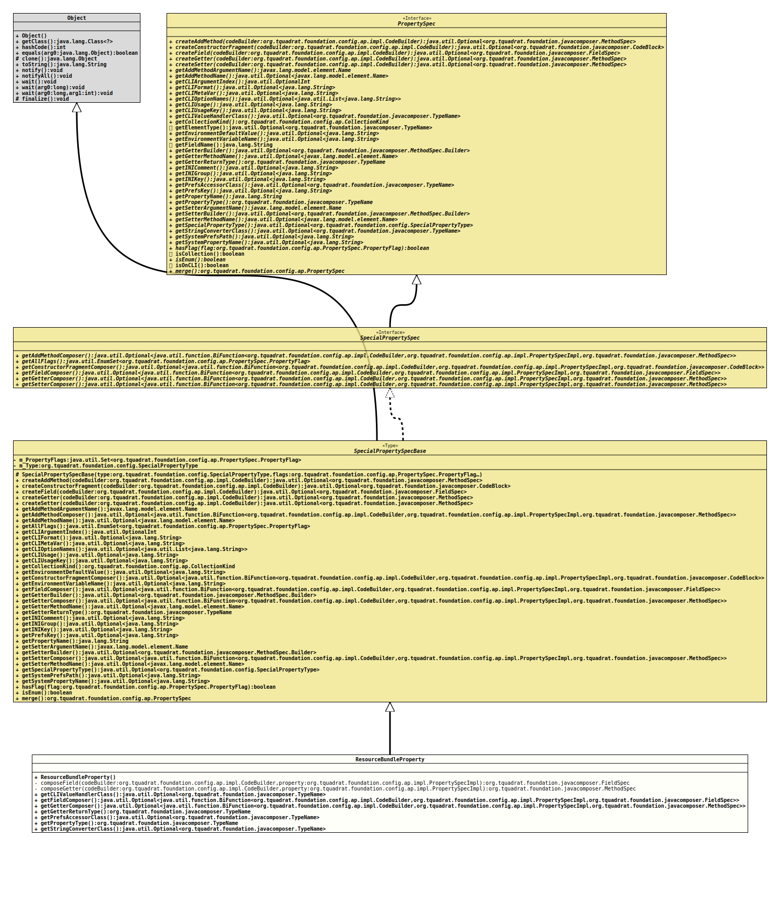

Class ResourceBundleProperty
java.lang.Object
org.tquadrat.foundation.config.ap.impl.specialprops.SpecialPropertySpecBase
org.tquadrat.foundation.config.ap.impl.specialprops.ResourceBundleProperty
- All Implemented Interfaces:
SpecialPropertySpec,PropertySpec
@ClassVersion(sourceVersion="$Id: ResourceBundleProperty.java 1001 2022-01-29 16:42:15Z tquadrat $")
@API(status=STABLE,
since="0.1.0")
public final class ResourceBundleProperty
extends SpecialPropertySpecBase
The implementation of
SpecialPropertySpecBase
for
SpecialPropertyType.CONFIG_PROPERTY_RESOURCEBUNDLE.- Author:
- Thomas Thrien (thomas.thrien@tquadrat.org)
- Version:
- $Id: ResourceBundleProperty.java 1001 2022-01-29 16:42:15Z tquadrat $
- Since:
- 0.1.0
- UML Diagram
-

UML Diagram for "org.tquadrat.foundation.config.ap.impl.specialprops.ResourceBundleProperty"
{kind=link}
-
Nested Class Summary
Nested classes/interfaces inherited from interface org.tquadrat.foundation.config.ap.PropertySpec
PropertySpec.PropertyFlag -
Constructor Summary
Constructors -
Method Summary
Modifier and TypeMethodDescriptionprivate static FieldSpeccomposeField(CodeBuilder codeBuilder, PropertySpecImpl property) The implementation of the method that composes a field for the given property.private static final MethodSpeccomposeGetter(CodeBuilder codeBuilder, PropertySpecImpl property) The implementation of the method that composes a getter for the given property.Returns the CLI value handler class for this property.Returns the method that composes the field for the property.Returns the method that composes the getter for the property.final TypeNameReturns the return type of the getter.Returns thePreferencesaccessor class.final TypeNameReturns the property type.Returns the class that implements the String converter for the type of this property.Methods inherited from class org.tquadrat.foundation.config.ap.impl.specialprops.SpecialPropertySpecBase
createAddMethod, createConstructorFragment, createField, createGetter, createSetter, getAddMethodArgumentName, getAddMethodComposer, getAddMethodName, getAllFlags, getCLIArgumentIndex, getCLIFormat, getCLIMetaVar, getCLIOptionNames, getCLIUsage, getCLIUsageKey, getCollectionKind, getConstructorFragmentComposer, getEnvironmentDefaultValue, getEnvironmentVariableName, getGetterBuilder, getGetterMethodName, getINIComment, getINIGroup, getINIKey, getPrefsKey, getPropertyName, getSetterArgumentName, getSetterBuilder, getSetterComposer, getSetterMethodName, getSpecialPropertyType, getSystemPrefsPath, getSystemPropertyName, hasFlag, isEnum, mergeMethods inherited from class java.lang.Object
clone, equals, finalize, getClass, hashCode, notify, notifyAll, toString, wait, wait, waitMethods inherited from interface org.tquadrat.foundation.config.ap.PropertySpec
getElementType, getFieldName, isCollection, isOnCLI
-
Constructor Details
-
ResourceBundleProperty
public ResourceBundleProperty()Creates a new instance ofResourceBundleProperty.
-
-
Method Details
-
composeField
The implementation of the method that composes a field for the given property.- Parameters:
codeBuilder- The factory for the code generation.property- The property.- Returns:
- The field specification.
-
composeGetter
The implementation of the method that composes a getter for the given property.
The implementation details depend from the usage: with
I18nSupport, it is a bit more complex.- Parameters:
codeBuilder- The factory for the code generation.property- The property.- Returns:
- The method specification.
-
getCLIValueHandlerClass
Returns the CLI value handler class for this property. -
getFieldComposer
Returns the method that composes the field for the property.- Specified by:
getFieldComposerin interfaceSpecialPropertySpec- Overrides:
getFieldComposerin classSpecialPropertySpecBase- Returns:
- An instance of
Optionalthat holds the field composer.
-
getGetterComposer
@MountPoint public Optional<BiFunction<CodeBuilder,PropertySpecImpl, getGetterComposer()MethodSpec>> Returns the method that composes the getter for the property.- Specified by:
getGetterComposerin interfaceSpecialPropertySpec- Overrides:
getGetterComposerin classSpecialPropertySpecBase- Returns:
- An instance of
Optionalthat holds the getter composer.
-
getGetterReturnType
Returns the return type of the getter. This is not necessarily the same as the property type.- Specified by:
getGetterReturnTypein interfacePropertySpec- Overrides:
getGetterReturnTypein classSpecialPropertySpecBase- Returns:
- The getter's return type.
-
getPrefsAccessorClass
Returns the
Preferencesaccessor class.This is used when this property is linked to a preference, but also to initialise it from a SYSTEM preference.
-
getPropertyType
Returns the property type.- Returns:
- The property type.
-
getStringConverterClass
Returns the class that implements the String converter for the type of this property.- Returns:
- An instance of
Optionalthat holds the implementation class forStringConverter.
-